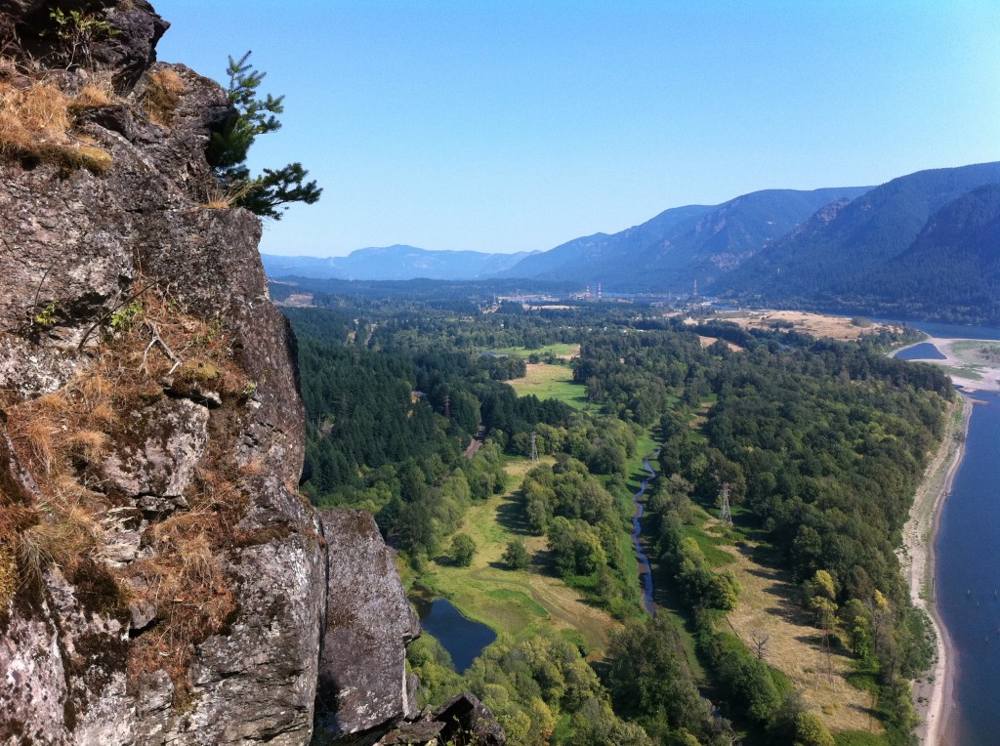

Beacon Rock
Beacon Rock is the plug of an ancient volcano. Some experts feel it's the eroded remains of an older mountain and some feel it's a relatively intact volcanic plug that never broke the surface. In either event, the ice age Missoula Floods scored away the loose material leaving a freestanding monolith that is said by some to be the second largest in the world, although people in other areas of the world disagree.
Plan Your Trip
Trail Aspects:
- Exertion: Easy, 2 Mile Round Trip
- Sights: Views of the Columbia Gorge
- Popularity: High
- Open: All Year
Fees:
- $10 Day-Use Fee (Available at the trailhead)
Amenities:
- Bathrooms
- Boat Launch
Directions From Portland:
- Travel Time: Approximately 47 minutes (35 Miles from Portland)
- Get on I-205, cross to the Washington side and take Highway 14 towards Hood River
- Stay on the highway for 35 miles
- Park is well-marked, follow the signs
